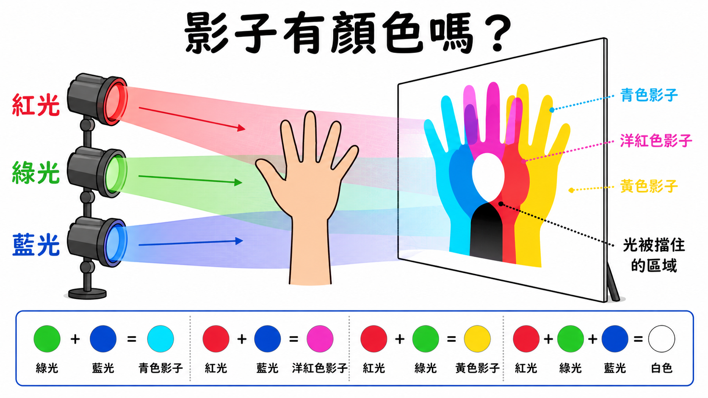

國小自然科學探究實作
用一束光，找出影子的規則
你是光影實驗室的小研究員。請用手電筒、積木、紙片與白色螢幕，觀察影子的大小、方向、深淺與形狀如何改變，最後設計一個能被同學驗證的光影小遊戲。
互動實驗室
調整光源，觀察影子立刻改變
彩色影子實驗室
影子裡還剩下哪些光？
影子不是塗上的黑色；某一種色光被擋住後，其他還能照到的光會決定影子的顏色。這是概念模擬，實際顏色會受燈具與環境光影響。
白色屏幕
三色光重疊，屏幕接近白色
關鍵觀念
紅＋綠＝黃，紅＋藍＝洋紅，綠＋藍＝青，三色全開接近白色。

分段動畫
看見影子形成的順序
第 1 步：先放好光源，確認光照向螢幕。
情境應用
選一張卡，判斷該改變什麼
形成性評量
10 題光影挑戰
已答 0 / 10
教師資源
來源、延伸與課堂準備
課堂材料建議
手電筒或手機燈、白紙或白板、不同材質物品、透明色片、積木、捲尺、記錄單。提醒學生不要直視強光，也不要用光照同學眼睛。